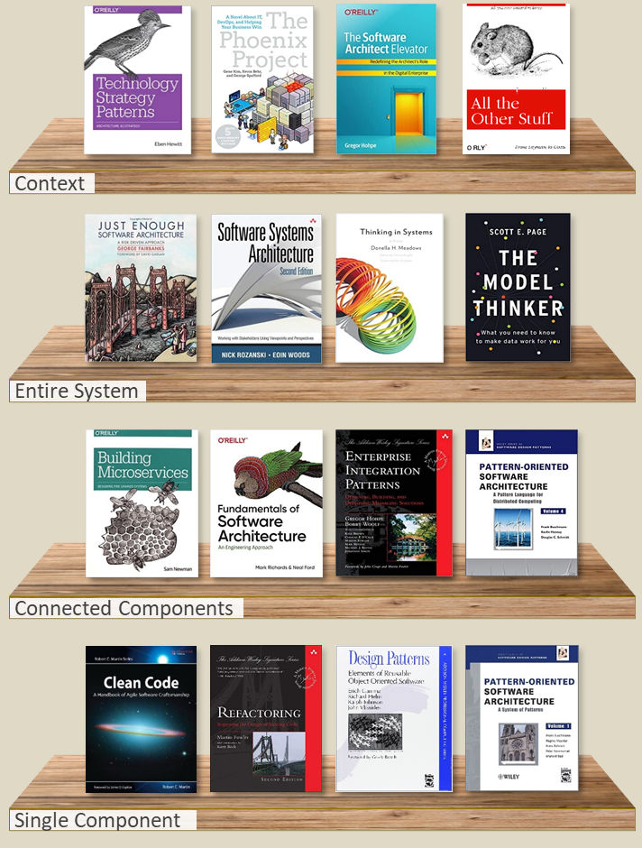

Separation of concerns and architectural thought
Recently a friend posed a question to our common group: What common problems do you face in building complex, evolving, maintainable systems? Below is the general path that this discussion flowed.
Broad level architectural thought
Main Architectural goal for building large, complex enough and evolving systems is almost always the same: Minimize the resources (people, machines) needed to accommodate change.
Top level method for doing this is almost always: separation of concerns. Achieving separation of concerns needs you to make tradeoffs. These are people, process, product related. E.g: dev velocity, team coordination, system performance, scalability, availability, failure models, etc.
As your org/project grows, the optimal tradeoff point shifts and you do the corresponding changes to adjust to these shifting tradeoffs.
Multi service integration thought
The defined API contract needs to be designed so that it is stable. Proper Resource based rest APIs come in handy for this. This is generally a non-trivial, error prone task for a lot of people, as defining resources you are handling and operations on them for today and tomorrow is very difficult. Same goes for DB schema design in a single service context.
One school of thought says that don’t worry about tomorrows responsibility as it is impossible to predict. While a good advice, completely ignoring any forward compatibility thought leads to a lot of pain down the line is a general observation.
Single service/concern bounded thought
Similar to Arch, major issue remain separation of concerns and tradeoffs you make.
Dev’s generally tend to start by mixing all things in a single function, class, package, etc. E.g; For a web service, people tend to do transport stuff (SSL, serialization, HTTP), business logic, database handling all as single methods in single place. For non web service process, people tend to handle any communication, threading, thread coordination, configuration, business logic, etc in single place. This mixing can be seen generally in different areas as below.
-
Observability: Adding anything related to observability tends to disturb business logic. E.g If you want an api metric to be present, you should be able to do that without touching BL. It generally doesn’t happen that cleanly.
-
State management and access: State handling is another common thing that starts as “accessible to all” as it is the simplest thing to start with. E.g: Make all states (Tables, files, blobs, etc) accessible to all functionality. As part of architectural evolution, you start by defining clear boundaries slowly slowly in terms of modules, packages, etc.
-
Class/Package issues: People would generally find it very very difficult to define boundaries of packages, classes. This is common even if classes or packages are designed with private/public functional capabilities. E.g: If a function is exposed, should it really be exposed? Is that function part of the responsibility of the class/package?
As newer requirements pour into the system, the architectural, service interaction and service responsibility specific tradeoffs change.
Few examples of these changes within a service boundary level are:
-
Changing levels of abstraction - a new class is created out of one big one. This may result in routing calls. Preferred way to handle this is to create a new class, let callers integrate with it, in the mean time redirect from main class to here. If the cost of maintenance turns out to be high, you have to force clients to upgrade. One middle ground here is: provide a sdk, do the rerouting in sdk, ask clients to upgrade the sdk.
-
Interface change: especially if parameters are removed. This may result in building a stub to manage it. This is preferably handled via versioning. Backward incompatible changes need to upgrade major versions. Old version stays until you deprecate it. In a single codebase, modifying the callers is almost always preferred over handling rerouting, stubs, etc. Versioning is used when you don’t control the callers. Again, tradeoff is cost of modifying everybody, vs maintaining reroutes.
Size of teams vs rules/patterns
One thing that I believe is that the rules/patterns to handle change don’t really change. What changes is the tradeoffs associated with picking a solution.
References
- Blog at a abstract level:
Patterns of legacy displacement
- Details about patterns are present in sidebar.
- Critical Aggregator
- Divert the Flow
- Extract Product Lines
- Feature Parity
- Legacy Mimic
- Revert to Source
- Transitional Architecture
- Details about patterns are present in sidebar.
- Books that I like:
- Software Architecture the hard parts
- Clean Architecture
- Architectural bookshelf with different levels/context of the problems:
